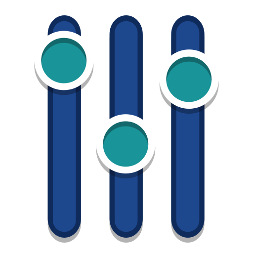

☰usuario — Dolphin
—▢✕
← → ↑ 🏠 usuario 🔍 ⚙
Locais
🏠 Início
🖥 Área de trabalho
📄 Documentos
⬇ Downloads
🖼 Imagens
Dispositivos
💾 Sistema
 Desktop
Desktop Documents
Documents Downloadsprojetoswww
Downloadsprojetoswww Pictures
Pictures VideosDesktopDocumentsDownloadsprojetoswwwPicturesVideos
VideosDesktopDocumentsDownloadsprojetoswwwPicturesVideos
 Konsole
Konsole Dolphin
Dolphin Kate
Kate Firefox ESR
Firefox ESR
KCalcArkGwenviewOkular
usuario — Dolphinusuario@kali : ~